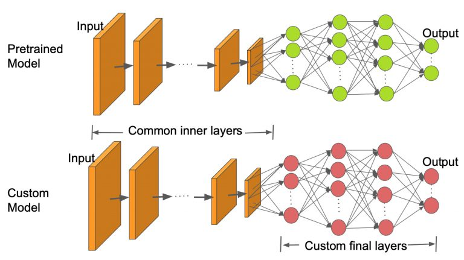
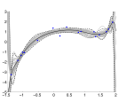

04 Gaussian Process
Advanced Machine Learning
Malte Schilling, Neuroinformatics Group, Bielefeld University
Recap – Representation Learning
Representation Learning
Current ML Pipeline
End-to-End Learning in Deep NN
(Goodfellow, Bengio, and Courville 2016)
Example: Waymo
Scene Representation in Autonomous Driving
VIDEO
Autoencoder (Weng 2018)
Entangled Representation
Autoencoder
Disentangled Representation
Encoder translates high-dimension input into latent low-dimensional code.
Decoder recovers data from the code.
Autoencoder – trained on faces
Ariel Sharon
0.44
0.54
0.48
13
Colin Powell
0.63
0.75
0.69
60
Donald Rumsfeld
0.71
0.56
0.63
27
George W Bush
0.85
0.88
0.87
146
Gerhard Schroeder
0.81
0.52
0.63
25
Hugo Chavez
0.56
0.60
0.58
15
micro avg
0.74
0.74
0.74
322
macro avg
0.67
0.63
0.64
322
weighted avg
0.75
0.74
0.74
322
Autoencoder – trained on faces
Dense Autoencoder
Weighted Average score 0.72
Convolutional Autoencoder
Weighted Average score 0.72
For small latent space: performs worse than PCA.
Convolutional AE has much less parameters – therefore allows to increase latent space which leads to much better results.
Convolutional NN – trained on faces
Differing Learning Goals
Classification using SVM performed better for small feature set (140) than the fully NN approach.
Higher feature number improved results and the CNN outperformed the SVM (w. score 0.93)
Comparing features from autoencoder and CNN: features from a net trained for classification worked better than features trained for reconstruction.
Features: Transfer Learning
Learning for multiple tasks – building a common representation.
Support Vector Machine
Support vector machines implement the large margin principle.
They apply non-linear mappings.
Importantly, the scalar product does not have to be computed in the high-dimenional space which is much more efficient.
The kernel function (weighted by multipliers) is applied wrt. the support vectors.
SVMs go back to (Vapnik 1998) , and a good tutorial can be found in (Burges 1998) .
Kernels as Mappings
Mappings transform features.
There are many types and implementations:
linear mappings: can be easily constructed from few data
Kernel machines: linear superposition of non-linear Kernels
Gaussian processes: generalize deterministic mappings
Neural networks: concatenation of many simple mappings (“neurons”)
Comparison of Decision Boundaries of Classifiers
Input
Nearest Neighbor
Comparison of Decision Boundaries of Classifiers
Input
Neural Network
Two perspectives on function learning
SVM and kernel machines already offer two different spaces:
an input space and
a function space that we exploited through the kernel function.
When we learn a parametric model, we can consider the parameters
as a distribution over parameters,
which induces a distribution over functions.
Guiding Question
Can we directly work in the space of functions and make predictions through marginalization?
Gaussian Processes – Bayesian Inference
Prior
Three random function rollouts for a zero-mean prior.
Posterior
Three random function drawn from the posterior that includes example points.
We are following (Rasmussen and Williams 2006) and (Rasmussen 2016) .
Gaussian Processes Overview
aware of uncertainty of the fitted GP that increases away from the training data,
let you incorporate expert knowledge,
are non-parametric,
need to take into account the whole training data for prediction.
Three random function drawn from the posterior that includes example points.
Further reading: (Rasmussen and Williams 2006) .
Probabilities and Bayesian Reasoning
Basic rules of probability
Product rule
The joint probability of an event \(A\) and \(B\) is given as
\[ p(A,B) = p(A \wedge B) = p(A|B)p(B) \]
Sum rule
From a joint distribution \(p(A,B)\) , we get the marginal distribution
\[ p(A) = \sum_b p(A,B) = \sum_b p(A|B=b) p(B=b) \]
Example: Two dice
We are throwing two dices – a red one (containing numbers 1 to 6) and a blue one which contains each of the numbers from 1 to 3 twice. We throw the blue one twice as often.
red
1/9
1/9
1/9
1/9
1/9
1/9
6/9
blue
1/9
1/9
1/9
0
0
0
3/9
any color \(p(N)\)
2/9
2/9
2/9
1/9
1/9
1/9
9/9
Joint probabilities \(p(C,N)\) are given in the central area.
The marginal probabilities are given at the bottom (\(p(N)\) ) and on the right (\(p(C)\) ).
Example: Conditional Probabilities
Conditional probabilities are calculated through renormalization: $ p(C|N) = $
red
1/2
1/2
1/2
1
1
1
9/2
blue
1/2
1/2
1/2
0
0
0
3/2
any color
2/2
2/2
2/2
1
1
1
Example from (Wiskott 2016) .
Bayes’ rule
… tells us how to invert conditional probabilities:
\[\begin{align*}
p(A,B) &= p(A|B)p(B) = p(B|A) p(A) \\
\Rightarrow p(B|A) &= \frac{p(A|B) p(B)}{p(A)}
\end{align*}\]
Here,
\(p(B)\) is the a priory probability , or the prior,\(p(A|B)\) is the likelihood of \(B\) for a fixed \(A\) ,and \(p(B|A)\) is the a posteriori probability of \(B\) given \(A\) .
Gaussian (normal) distribution
Is characterized by mean \(\mu\) and variance \(\sigma\) . The probability distribution is given as
\[
p(X = x) = \mathcal{N} (x | \mu, \sigma^2) = \frac{1}{\sqrt{2\pi \sigma^2}} e^{-\frac{1}{2\sigma^2}(x-\mu)^2}
\]
The multivariate Gaussian for \(D\) dimensions is given as
\[
\mathcal{N} (\vec{x} | \vec{\mu}, \Sigma) = \frac{1}{(2\pi)^{D/2} (det\ \Sigma)^{1/2}} exp\ (-\frac{1}{2} (\vec{x}-\vec{\mu})^T\Sigma^{-1}(\vec{x} - \vec{\mu}) )
\]
For Visual Exploration of Covariance and GP
Gaussian Process – Distribution over Parameters
Bayesian Inference
Our goal is to establish inferences between inputs and targets. This is the conditional distribution of the targets given the input.
Our training set \(\mathcal{D}\) consists of \(n\) observations: \[ \mathcal{D} = \{ (\vec{x}_i, y_i) | i = 1,...,n \}
\]
which we can collect in the design matrix.
(Rasmussen and Williams 2006)
A prior on parameters
In a parametric model \(\mathcal{M}\) , the model is defined by the structure and the parameters:
\[ f_w(\vec{x}) = \sum_{m=0}^{M} w_m \phi_m(\vec{x})\]
We can define a prior \(p(\vec{w} | \mathcal{M})\) for the parameters of the model – this determines the functions the model can generate.
First, we are selecting a structure.
Secondly, we are selecting a probability distribution for the parameters.
Example: A prior distribution over functions
As an example,
we choose a polynomical model with \(M = 17\) : \(\phi_m(\vec{x}) = \vec{x}^m\)
as a prior for the parameter distribution we choose a normal distribution: \[p(w_m) = \mathcal{N} (w_m | \mu, \sigma_w^2)\]
Shown is one example for which we sampled all the parameters from the normal distribution.
Distribution over functions
We have seen now an algorithm for building a model through selecting the model type and sample parameters.
But we are interested in predictions of the model and not the parameters as such.
Secondly, we want to work directly in the space of functions. This becomes possible as a distribution over parameters induces a distribution over functions \(p(\vec{f} | \mathcal{M})\) .
This would be simpler and allow for more efficient inference.
Posterior probabilities for a function
Our goal is to use our functions \(\vec{f}\) to make predictions for novel inputs. But until now, we have only looked at the prior for these functions \(p(\vec{f}| \mathcal{M})\) .
We are interested in the posterior distribution of the function – that is which is conditioned on our evidence:
\[\begin{align*}
p(\vec{f} | \vec{y}) = \frac{p(\vec{y}|\vec{f}) p(\vec{f})}{p(\vec{y})}
\end{align*}\]

Sample from the posterior (Rasmussen 2016)
we can consider this as: when sampling from the prior, reject only that fit the data (go through the data points)
closeness to the data is given through the likelihood \(p(\vec{y}|\vec{f})\)
Drawback of polynomials as priors for functions
Shown are samples for parameters for polynomial functions of different order (Rasmussen 2016) .
Drawback of sampling over parameters
Distributions over parameters induce distribution over functions.
But sampling over parameter space and using priors over functions might not lead to good results (see example for polynomials).
Therefore, we want to work directly on priors and probability distributions over functions.
This leads to the question of how probability distribution over functions look like and how they could be specified.
Gaussian Processes
Prior
Three random function rollouts for a zero-mean prior.
Posterior
Three random function drawn from the posterior that includes example points.
We are following (Rasmussen and Williams 2006) and [rasmussen2016].
Gaussian Process – Parametric View
Bayesian Analysis of Linear Regression
We do regression on a function \(t(\vec{x}) = \vec{x}^T \vec{w}\) with added Gaussian noise.
This leads to observation \[ y = f(\vec{x}) + \varepsilon, \varepsilon \sim \mathcal{N}(\vec{0}, \sigma^2_n) \]
We can calculate the likelihood of the data (due to i.i.d.):
\[\begin{align*}
p(\vec{y}| \vec{X}, \vec{w})
\end{align*}\]
A prior on the parameters is required and we use a zero mean Gaussian with covariance matrix \(\Sigma_p\) :
\[ \vec{w} \sim \mathcal{N}(\vec{0}, \Sigma_p)
\]
Inference in Bayesian linear model
We are looking for the posterior distribution over the weights which we get through Bayes’ rule:
\[
\text{posterior} = \frac{\text{likelihood } \times \text{ prior}}{\text{marginal likelihood}},\ p(\vec{w} | \vec{y}, \ X) = \frac{p(\vec{y}|X, w) p(\vec{w})}{p(\vec{y}| X)}
\]
References
Burges, Christopher J. C. 1998. “A Tutorial on Support Vector Machines for Pattern Recognition.” Data Mining and Knowledge Discovery 2: 121–67.
Goodfellow, Ian, Yoshua Bengio, and Aaron Courville. 2016. Deep Learning . MIT Press.
Rasmussen, Carl Edward. 2016. “Probabilistic Machine Learning.” Lecture Notes, University of Cambridge.
Rasmussen, CE., and CKI. Williams. 2006. Gaussian Processes for Machine Learning . Adaptive Computation and Machine Learning. Cambridge, MA, USA: Biologische Kybernetik; Max-Planck-Gesellschaft; MIT Press.
Vapnik, Vladimir N. 1998. Statistical Learning Theory . Wiley-Interscience.
Wiskott, Laurenz. 2016. “Lecture Notes on Bayesian Theory and Graphical Models.” Lecture Notes, University of Bochum.